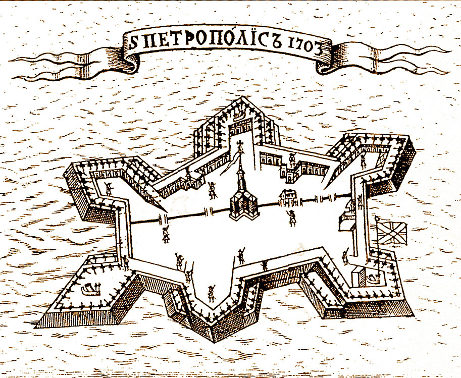
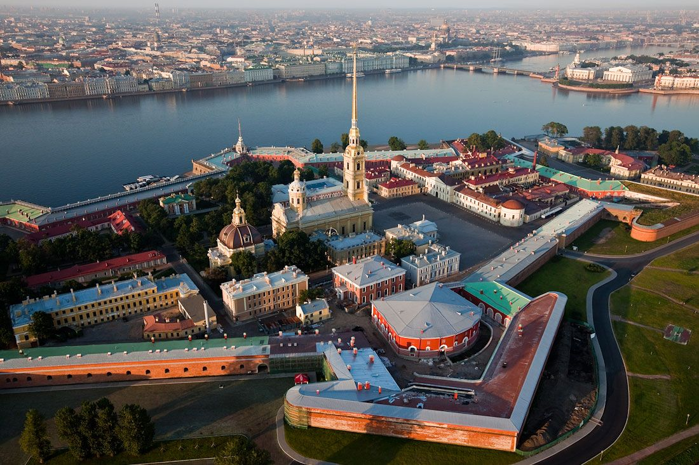
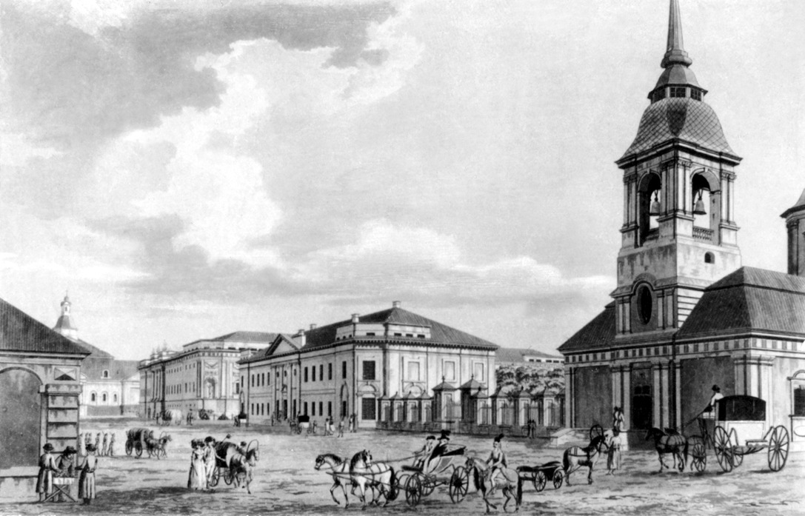
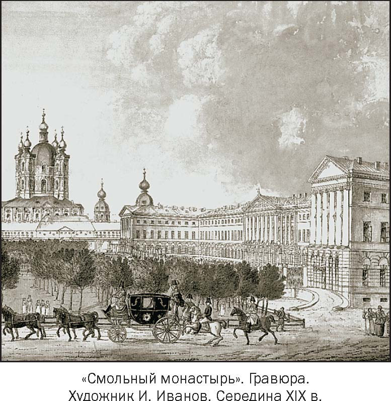
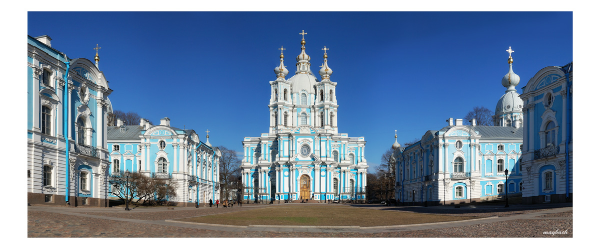

Правитель взял заступ, вышел на открытое место, где заметил летающего орла. Петр срубил березы и поставил их в яму. Орел сел на верхушки деревьев. Петр связал его лапы и посадил птицу к себе на плечо. Согласно легенде, с тех пор орел всегда был с Петром.
Таким и было основание Санкт-Петербурга. Его датой принято считать 16 мая 1703 года - в этот день император начал строительство крепости, позже названной Петропавловской (в честь апостолов Петра и Павла). Сначала она именовалась «Санктпитербурх», что и легло в основу наречения целого города в дальнейшем.
План Петропавловской крепости 1703 года
Петропавловская крепость в наши дни
История не сохранила документов о названии Санкт-Петербурга. Современники, окружавшие Петра, называли город по-разному. Самому императору нравилось название Ниеншанц — по имени крепости. В первой половине XVIII века существовало более 30 вариантов названий города. Сегодня как только ни называют город Петра - Северная столица, Культурная столица, Питер, Город на Неве, Город белых ночей, Петрополь, Питер, СПб, Северная Пальмира, Северная Венеция.
Весной 1704-го крепость приобрела вид неправильного шестиугольника. Затем Петр решил рядом отстроить гавань для кораблей, продовольственные и военные склады, казармы для солдат и офицерские дома. Царь приказал в первую очередь закладывать здания, необходимые для нужд армии. Были построены: верфь, кожевенное и пороховое производство, Литейный и Смольный дворы.
Литейный двор 1703 год
 Смольный двор в наши дни
Новый город задумывался Петром как порт, сооруженный на отвоеванных территориях. Царь поставил цель перебросить сюда поток морских грузов из Архангельска. Осенью 1703 года в гавань Петербурга вошел первый корабль из-за рубежа. Прибытие судна торжественно отметили, а экипаж щедро наградили.
На соседнем острове по указу Петра I стали возводить первые сооружения. Под Выборгом был заложен Троицкий собор. Его назвали в честь основания Санкт-Петербурга, которое состоялось на Троицу. Сохранился деревянный домик для царя. Был организован первый порт. Вскоре постройки стали возводить и на другом берегу реки, и на Васильевском острове.